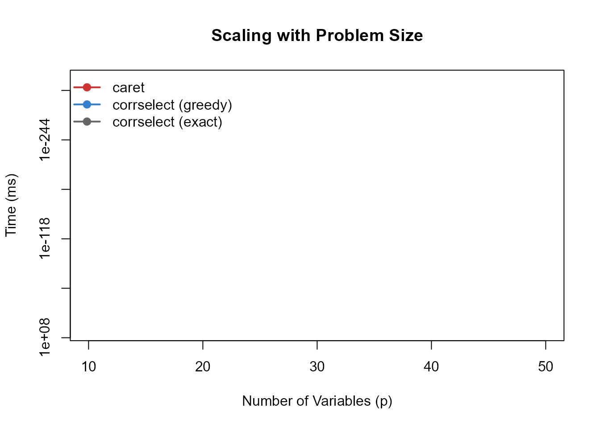
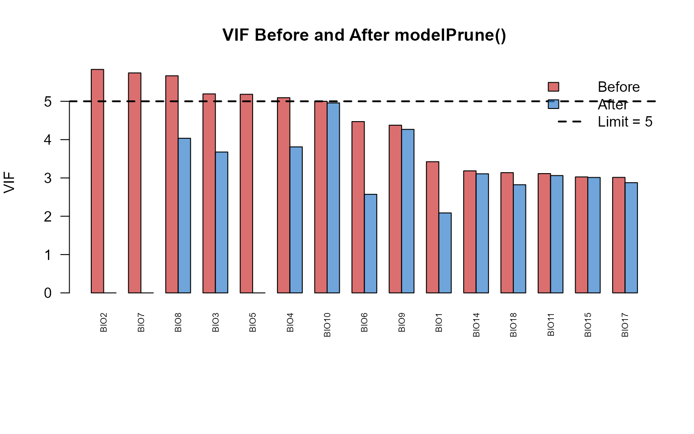

Comparison with Alternatives
Gilles Colling
2025-11-25
Source:vignettes/comparison.Rmd
comparison.RmdOverview
This vignette compares corrselect with common alternatives for handling multicollinearity and variable selection:
- caret::findCorrelation(): Greedy correlation-based removal
- Boruta: Random forest feature importance
- glmnet: LASSO/Ridge regularization
- Manual VIF removal: Iterative variance inflation factor pruning
Test Dataset
We’ll use the bioclim_example dataset with 19 WorldClim
bioclimatic variables:
data(bioclim_example)
predictors <- bioclim_example[, -1] # Exclude response
response <- bioclim_example[, 1]
cat("Number of variables:", ncol(predictors), "\n")
#> Number of variables: 19
cat("Sample size:", nrow(predictors), "\n")
#> Sample size: 100
cat("Response variable: species_richness\n")
#> Response variable: species_richnessLet’s visualize the correlation structure:
cor_matrix <- cor(predictors)
# Custom color palette
col_pal <- colorRampPalette(c("#3B4992", "white", "#EE0000"))(100)
# Correlation heatmap
par(mar = c(1, 1, 2, 1))
image(1:ncol(cor_matrix), 1:nrow(cor_matrix), t(cor_matrix[nrow(cor_matrix):1, ]),
col = col_pal,
xlab = "", ylab = "", axes = FALSE,
main = "Correlation Matrix (19 Bioclimatic Variables)",
zlim = c(-1, 1))
axis(1, at = 1:ncol(cor_matrix), labels = colnames(cor_matrix), las = 2, cex.axis = 0.7)
axis(2, at = ncol(cor_matrix):1, labels = colnames(cor_matrix), las = 2, cex.axis = 0.7)
# Add correlation values
for (i in 1:ncol(cor_matrix)) {
for (j in 1:nrow(cor_matrix)) {
text(i, nrow(cor_matrix) - j + 1, sprintf("%.2f", cor_matrix[j, i]), cex = 0.5)
}
}
Comparison 1: caret::findCorrelation()
caret’s findCorrelation() uses a greedy heuristic to
remove correlated variables.
How It Works
if (requireNamespace("caret", quietly = TRUE)) {
# Run caret
to_remove_caret <- caret::findCorrelation(cor_matrix, cutoff = 0.7)
result_caret <- predictors[, -to_remove_caret]
cat("Variables removed by caret:", length(to_remove_caret), "\n")
cat("Variables kept:", ncol(result_caret), "\n")
cat("Removed variables:", colnames(predictors)[to_remove_caret], "\n")
}
#> Variables removed by caret: 9
#> Variables kept: 10
#> Removed variables: BIO8 BIO7 BIO5 BIO4 BIO3 BIO9 BIO1 BIO11 BIO15corrselect::corrPrune() Comparison
# Run corrselect (exact mode)
result_corrselect <- corrPrune(predictors, threshold = 0.7, mode = "exact")
cat("\nVariables removed by corrselect:", length(attr(result_corrselect, "removed_vars")), "\n")
#>
#> Variables removed by corrselect: 0
cat("Variables kept:", ncol(result_corrselect), "\n")
#> Variables kept: 12
cat("Removed variables:", attr(result_corrselect, "removed_vars"), "\n")
#> Removed variables:Visual Comparison
# Extract correlations
cor_orig <- cor(predictors)
cor_corrselect <- cor(result_corrselect)
if (requireNamespace("caret", quietly = TRUE)) {
cor_caret <- cor(result_caret)
# Overlaid histogram comparing all three
hist(abs(cor_orig[upper.tri(cor_orig)]),
breaks = 30,
main = "Distribution of Absolute Correlations",
xlab = "Absolute Correlation",
col = rgb(0.5, 0.5, 0.5, 0.4),
xlim = c(0, 1))
hist(abs(cor_caret[upper.tri(cor_caret)]),
breaks = 30,
col = rgb(0.8, 0.2, 0.2, 0.4),
add = TRUE)
hist(abs(cor_corrselect[upper.tri(cor_corrselect)]),
breaks = 30,
col = rgb(0.2, 0.5, 0.8, 0.4),
add = TRUE)
abline(v = 0.7, col = "black", lwd = 2, lty = 2)
legend("topright",
legend = c(paste0("Original (", ncol(predictors), " vars)"),
paste0("caret (", ncol(result_caret), " vars)"),
paste0("corrselect (", ncol(result_corrselect), " vars)"),
"Threshold"),
fill = c(rgb(0.5, 0.5, 0.5, 0.4), rgb(0.8, 0.2, 0.2, 0.4),
rgb(0.2, 0.5, 0.8, 0.4), NA),
border = c("black", "black", "black", NA),
lty = c(NA, NA, NA, 2),
lwd = c(NA, NA, NA, 2),
bty = "n")
}
Key Differences
| Feature | caret::findCorrelation() | corrselect::corrPrune() |
|---|---|---|
| Algorithm | Greedy heuristic | Graph-theoretic (vignette("theory")) |
| Reproducibility | Non-deterministic | Fully reproducible |
| Variables retained | Fewer (conservative removal) | More (maximizes retention) |
| force_in support | No | Yes |
| Mixed data | No | Yes (via assocSelect) |
| Speed | Fast | Fast (greedy) or moderate (exact) |
caret: Quick exploratory analysis where reproducibility is not critical.
corrselect: Reproducible results and maximal variable retention.
Reproducible Benchmarks
Using the cor_example dataset (20 variables with known
block structure):
data(cor_example)
# Ensure matrix is exactly symmetric (fix any floating point asymmetries)
cor_example <- (cor_example + t(cor_example)) / 2
diag(cor_example) <- 1
cat("Matrix dimensions:", nrow(cor_example), "x", ncol(cor_example), "\n")
#> Matrix dimensions: 20 x 20
cat("Mean correlation:", mean(abs(cor_example[upper.tri(cor_example)])), "\n")
#> Mean correlation: 0.2021275Timing comparison at threshold = 0.7:
if (requireNamespace("caret", quietly = TRUE) &&
requireNamespace("microbenchmark", quietly = TRUE)) {
# Benchmark with microbenchmark
mb <- microbenchmark::microbenchmark(
caret = {
to_remove <- caret::findCorrelation(cor_example, cutoff = 0.7)
cor_example[, -to_remove]
},
corrselect_greedy = {
MatSelect(cor_example, threshold = 0.7, mode = "greedy")
},
corrselect_exact = {
MatSelect(cor_example, threshold = 0.7, mode = "exact")
},
times = 50
)
print(mb)
}
#> Unit: microseconds
#> expr min lq mean median uq max neval cld
#> caret 262.8 312.9 342.116 329.85 366.0 467.2 50 a
#> corrselect_greedy 331.7 353.1 387.340 376.95 413.9 528.0 50 b
#> corrselect_exact 326.9 357.2 385.456 379.35 397.3 570.0 50 bVisualization of timing results:
if (requireNamespace("caret", quietly = TRUE) &&
requireNamespace("microbenchmark", quietly = TRUE)) {
# Convert to milliseconds
mb_df <- data.frame(
method = mb$expr,
time_ms = mb$time / 1e6
)
# Compute medians for plotting
method_levels <- c("caret", "corrselect_greedy", "corrselect_exact")
method_labels <- c("caret", "corrselect (greedy)", "corrselect (exact)")
medians <- sapply(method_levels, function(m) {
median(mb_df$time_ms[mb_df$method == m])
})
# Barplot
par(mar = c(8, 4, 4, 2))
bp <- barplot(medians,
names.arg = method_labels,
las = 2,
col = c(rgb(0.8, 0.2, 0.2, 0.7),
rgb(0.2, 0.5, 0.8, 0.7),
rgb(0.4, 0.4, 0.4, 0.7)),
ylab = "Median Time (ms)",
main = "Timing Comparison (p=20, threshold=0.7)",
cex.names = 0.8)
# Add median values on bars
text(bp, medians, labels = sprintf("%.2f ms", medians),
pos = 3, cex = 0.8)
}Scaling with problem size:
if (requireNamespace("caret", quietly = TRUE)) {
set.seed(20250125)
p_values <- c(10, 20, 30, 40, 50)
times_caret <- numeric(length(p_values))
times_corrselect_greedy <- numeric(length(p_values))
times_corrselect_exact <- numeric(length(p_values))
for (i in seq_along(p_values)) {
p <- p_values[i]
# Generate test matrix
mat <- matrix(rnorm(p * (p + 50)), ncol = p)
cor_mat <- cor(mat)
# Time caret
times_caret[i] <- system.time({
caret::findCorrelation(cor_mat, cutoff = 0.7)
})[3]
# Time corrselect greedy
times_corrselect_greedy[i] <- system.time({
MatSelect(cor_mat, threshold = 0.7, mode = "greedy")
})[3]
# Time corrselect exact (skip for p > 30 to avoid long runtime)
if (p <= 30) {
times_corrselect_exact[i] <- system.time({
MatSelect(cor_mat, threshold = 0.7, mode = "exact")
})[3]
} else {
times_corrselect_exact[i] <- NA
}
}
# Plot scaling
plot(p_values, times_caret * 1000,
type = "b", col = rgb(0.8, 0.2, 0.2), pch = 19, lwd = 2,
xlab = "Number of Variables (p)",
ylab = "Time (ms)",
main = "Scaling with Problem Size",
log = "y", ylim = c(0.1, max(times_corrselect_exact * 1000, na.rm = TRUE)))
lines(p_values, times_corrselect_greedy * 1000,
type = "b", col = rgb(0.2, 0.5, 0.8), pch = 19, lwd = 2)
lines(p_values[!is.na(times_corrselect_exact)],
times_corrselect_exact[!is.na(times_corrselect_exact)] * 1000,
type = "b", col = rgb(0.4, 0.4, 0.4), pch = 19, lwd = 2)
legend("topleft",
legend = c("caret", "corrselect (greedy)", "corrselect (exact)"),
col = c(rgb(0.8, 0.2, 0.2), rgb(0.2, 0.5, 0.8), rgb(0.4, 0.4, 0.4)),
lwd = 2, pch = 19, bty = "n")
}
#> Warning in xy.coords(x, y, xlabel, ylabel, log): 5 y values <= 0 omitted from
#> logarithmic plot
#> Warning in plot.window(...): nonfinite axis=2 limits [GScale(-1,-inf,..);
#> log=TRUE] -- corrected now
Comparison 2: Boruta
Boruta identifies important variables via random forest permutation tests. This is fundamentally different from removing redundant variables.
Different Questions
if (requireNamespace("Boruta", quietly = TRUE)) {
library(Boruta)
# Boruta: which variables predict species richness?
set.seed(123)
boruta_result <- Boruta(species_richness ~ ., data = bioclim_example, maxRuns = 100)
cat("Boruta results:\n")
print(table(boruta_result$finalDecision))
important_vars <- names(boruta_result$finalDecision[boruta_result$finalDecision == "Confirmed"])
cat("\nConfirmed important variables:", important_vars, "\n")
cat("Number of important variables:", length(important_vars), "\n")
}
# corrselect: which variables are redundant?
corrselect_result <- corrPrune(predictors, threshold = 0.7)
cat("\ncorrselect results:\n")
#>
#> corrselect results:
cat("Non-redundant variables:", ncol(corrselect_result), "\n")
#> Non-redundant variables: 12
cat("Variables:", names(corrselect_result), "\n")
#> Variables: BIO1 BIO3 BIO6 BIO9 BIO11 BIO12 BIO13 BIO14 BIO16 BIO17 BIO18 BIO19Comparison Table
| Aspect | Boruta | corrselect |
|---|---|---|
| Question answered | “Which variables predict Y?” | “Which variables are redundant?” |
| Criterion | Variable importance | Pairwise correlation |
| Requires response | Yes (supervised) | No (unsupervised) |
| Handles multicollinearity | Partially | Yes (explicitly) |
| Deterministic | No (stochastic) | Yes |
| Computational cost | High (many random forests) | Low |
Combined Workflow
Boruta and corrselect can be used sequentially:
# Remove redundant predictors (corrselect)
data_pruned <- corrPrune(raw_data, threshold = 0.7)
# Identify important predictors (Boruta)
boruta_result <- Boruta(response ~ ., data = data_pruned)
final_vars <- names(boruta_result$finalDecision[boruta_result$finalDecision == "Confirmed"])
# Final model
final_model <- lm(response ~ ., data = data_pruned[, c("response", final_vars)])Workflow components:
- corrPrune reduces the variable set based on correlation structure
- Boruta screens the reduced set for predictive importance
- Final model contains variables that are both non-redundant and statistically important
This addresses both redundancy and variable importance when both reproducible pruning and RF-based importance tests are required.
Comparison 3: glmnet (LASSO/Ridge)
glmnet performs variable selection via L1/L2 regularization, shrinking coefficients toward zero.
How It Works
if (requireNamespace("glmnet", quietly = TRUE)) {
library(glmnet)
# Prepare data
X <- as.matrix(predictors)
y <- response
# Fit LASSO with cross-validation
set.seed(123)
cv_lasso <- cv.glmnet(X, y, alpha = 1)
# Extract non-zero coefficients at lambda.1se
coef_lasso <- coef(cv_lasso, s = "lambda.1se")
selected_lasso <- rownames(coef_lasso)[coef_lasso[, 1] != 0][-1] # Remove intercept
cat("glmnet selected variables:", selected_lasso, "\n")
cat("Number of variables:", length(selected_lasso), "\n")
}Compare Prediction Performance
if (requireNamespace("glmnet", quietly = TRUE)) {
# Model 1: glmnet-selected variables (OLS)
model_glmnet <- lm(species_richness ~ .,
data = bioclim_example[, c("species_richness", selected_lasso)])
# Model 2: corrselect-selected variables (OLS)
model_corrselect <- lm(species_richness ~ .,
data = cbind(species_richness = response, result_corrselect))
cat("\nPrediction performance (R²):\n")
cat("glmnet variables:", round(summary(model_glmnet)$r.squared, 3), "\n")
cat("corrselect variables:", round(summary(model_corrselect)$r.squared, 3), "\n")
cat("\nNumber of predictors:\n")
cat("glmnet:", length(selected_lasso), "\n")
cat("corrselect:", ncol(result_corrselect), "\n")
}Visual: Coefficient Comparison
if (requireNamespace("glmnet", quietly = TRUE)) {
par(mfrow = c(1, 2), mar = c(8, 4, 3, 2))
# glmnet coefficients (shrinkage)
coef_vals <- coef_lasso[coef_lasso[, 1] != 0, ][-1]
barplot(sort(abs(coef_vals), decreasing = TRUE),
las = 2,
main = "glmnet: Shrunk Coefficients",
ylab = "Absolute Coefficient Value",
col = "salmon",
cex.names = 0.7)
# corrselect: unbiased OLS coefficients
coef_corrselect <- coef(model_corrselect)[-1] # Remove intercept
barplot(sort(abs(coef_corrselect), decreasing = TRUE),
las = 2,
main = "corrselect: Unbiased OLS Coefficients",
ylab = "Absolute Coefficient Value",
col = "lightblue",
cex.names = 0.7)
}Key Differences
| Feature | glmnet | corrselect |
|---|---|---|
| Primary goal | Prediction accuracy | Interpretability + multicollinearity removal |
| Method | Coefficient shrinkage | Hard variable removal |
| Coefficient bias | Yes (shrunk toward zero) | No (standard OLS) |
| Multicollinearity | Handles via shrinkage | Removes via pruning |
| Requires response | Yes | No (corrPrune) |
| Cross-validation | Built-in | Not needed |
glmnet: Prediction-focused; coefficient interpretability secondary.
corrselect: Interpretability focus; unbiased coefficients; exploratory analysis without response variable.
Comparison 4: modelPrune() vs Manual VIF Removal
For regression models, VIF-based multicollinearity removal is common.
Let’s compare corrselect’s modelPrune() with manual VIF
removal.
Manual VIF Removal (Traditional Approach)
# Manual iterative VIF removal
manual_vif_removal <- function(formula, data, threshold = 5) {
require(car)
model <- lm(formula, data = data)
vif_vals <- car::vif(model)
iterations <- 0
while (max(vif_vals) > threshold && iterations < 100) {
iterations <- iterations + 1
# Remove variable with highest VIF
var_to_remove <- names(which.max(vif_vals))
cat("Iteration", iterations, ": Removing", var_to_remove, "(VIF =",
round(max(vif_vals), 2), ")\n")
# Update formula
formula_str <- paste(deparse(formula), collapse = "")
formula_str <- gsub(paste0("\\+\\s*", var_to_remove), "", formula_str)
formula_str <- gsub(paste0(var_to_remove, "\\s*\\+"), "", formula_str)
formula <- as.formula(formula_str)
# Refit model
model <- lm(formula, data = data)
vif_vals <- car::vif(model)
}
list(model = model, iterations = iterations, vif = vif_vals)
}
# Run manual VIF removal
if (requireNamespace("car", quietly = TRUE)) {
cat("Manual VIF removal (iterative):\n")
manual_result <- manual_vif_removal(species_richness ~ ., data = bioclim_example, threshold = 5)
cat("\nFinal VIF values:\n")
print(round(manual_result$vif, 2))
cat("\nTotal iterations:", manual_result$iterations, "\n")
}
#> Manual VIF removal (iterative):
#> Loading required package: car
#> Loading required package: carData
#> Iteration 1 : Removing BIO2 (VIF = 5.83 )
#> Iteration 2 : Removing BIO2 (VIF = 5.83 )
#> Iteration 3 : Removing BIO2 (VIF = 5.83 )
#> Iteration 4 : Removing BIO2 (VIF = 5.83 )
#> Iteration 5 : Removing BIO2 (VIF = 5.83 )
#> Iteration 6 : Removing BIO2 (VIF = 5.83 )
#> Iteration 7 : Removing BIO2 (VIF = 5.83 )
#> Iteration 8 : Removing BIO2 (VIF = 5.83 )
#> Iteration 9 : Removing BIO2 (VIF = 5.83 )
#> Iteration 10 : Removing BIO2 (VIF = 5.83 )
#> Iteration 11 : Removing BIO2 (VIF = 5.83 )
#> Iteration 12 : Removing BIO2 (VIF = 5.83 )
#> Iteration 13 : Removing BIO2 (VIF = 5.83 )
#> Iteration 14 : Removing BIO2 (VIF = 5.83 )
#> Iteration 15 : Removing BIO2 (VIF = 5.83 )
#> Iteration 16 : Removing BIO2 (VIF = 5.83 )
#> Iteration 17 : Removing BIO2 (VIF = 5.83 )
#> Iteration 18 : Removing BIO2 (VIF = 5.83 )
#> Iteration 19 : Removing BIO2 (VIF = 5.83 )
#> Iteration 20 : Removing BIO2 (VIF = 5.83 )
#> Iteration 21 : Removing BIO2 (VIF = 5.83 )
#> Iteration 22 : Removing BIO2 (VIF = 5.83 )
#> Iteration 23 : Removing BIO2 (VIF = 5.83 )
#> Iteration 24 : Removing BIO2 (VIF = 5.83 )
#> Iteration 25 : Removing BIO2 (VIF = 5.83 )
#> Iteration 26 : Removing BIO2 (VIF = 5.83 )
#> Iteration 27 : Removing BIO2 (VIF = 5.83 )
#> Iteration 28 : Removing BIO2 (VIF = 5.83 )
#> Iteration 29 : Removing BIO2 (VIF = 5.83 )
#> Iteration 30 : Removing BIO2 (VIF = 5.83 )
#> Iteration 31 : Removing BIO2 (VIF = 5.83 )
#> Iteration 32 : Removing BIO2 (VIF = 5.83 )
#> Iteration 33 : Removing BIO2 (VIF = 5.83 )
#> Iteration 34 : Removing BIO2 (VIF = 5.83 )
#> Iteration 35 : Removing BIO2 (VIF = 5.83 )
#> Iteration 36 : Removing BIO2 (VIF = 5.83 )
#> Iteration 37 : Removing BIO2 (VIF = 5.83 )
#> Iteration 38 : Removing BIO2 (VIF = 5.83 )
#> Iteration 39 : Removing BIO2 (VIF = 5.83 )
#> Iteration 40 : Removing BIO2 (VIF = 5.83 )
#> Iteration 41 : Removing BIO2 (VIF = 5.83 )
#> Iteration 42 : Removing BIO2 (VIF = 5.83 )
#> Iteration 43 : Removing BIO2 (VIF = 5.83 )
#> Iteration 44 : Removing BIO2 (VIF = 5.83 )
#> Iteration 45 : Removing BIO2 (VIF = 5.83 )
#> Iteration 46 : Removing BIO2 (VIF = 5.83 )
#> Iteration 47 : Removing BIO2 (VIF = 5.83 )
#> Iteration 48 : Removing BIO2 (VIF = 5.83 )
#> Iteration 49 : Removing BIO2 (VIF = 5.83 )
#> Iteration 50 : Removing BIO2 (VIF = 5.83 )
#> Iteration 51 : Removing BIO2 (VIF = 5.83 )
#> Iteration 52 : Removing BIO2 (VIF = 5.83 )
#> Iteration 53 : Removing BIO2 (VIF = 5.83 )
#> Iteration 54 : Removing BIO2 (VIF = 5.83 )
#> Iteration 55 : Removing BIO2 (VIF = 5.83 )
#> Iteration 56 : Removing BIO2 (VIF = 5.83 )
#> Iteration 57 : Removing BIO2 (VIF = 5.83 )
#> Iteration 58 : Removing BIO2 (VIF = 5.83 )
#> Iteration 59 : Removing BIO2 (VIF = 5.83 )
#> Iteration 60 : Removing BIO2 (VIF = 5.83 )
#> Iteration 61 : Removing BIO2 (VIF = 5.83 )
#> Iteration 62 : Removing BIO2 (VIF = 5.83 )
#> Iteration 63 : Removing BIO2 (VIF = 5.83 )
#> Iteration 64 : Removing BIO2 (VIF = 5.83 )
#> Iteration 65 : Removing BIO2 (VIF = 5.83 )
#> Iteration 66 : Removing BIO2 (VIF = 5.83 )
#> Iteration 67 : Removing BIO2 (VIF = 5.83 )
#> Iteration 68 : Removing BIO2 (VIF = 5.83 )
#> Iteration 69 : Removing BIO2 (VIF = 5.83 )
#> Iteration 70 : Removing BIO2 (VIF = 5.83 )
#> Iteration 71 : Removing BIO2 (VIF = 5.83 )
#> Iteration 72 : Removing BIO2 (VIF = 5.83 )
#> Iteration 73 : Removing BIO2 (VIF = 5.83 )
#> Iteration 74 : Removing BIO2 (VIF = 5.83 )
#> Iteration 75 : Removing BIO2 (VIF = 5.83 )
#> Iteration 76 : Removing BIO2 (VIF = 5.83 )
#> Iteration 77 : Removing BIO2 (VIF = 5.83 )
#> Iteration 78 : Removing BIO2 (VIF = 5.83 )
#> Iteration 79 : Removing BIO2 (VIF = 5.83 )
#> Iteration 80 : Removing BIO2 (VIF = 5.83 )
#> Iteration 81 : Removing BIO2 (VIF = 5.83 )
#> Iteration 82 : Removing BIO2 (VIF = 5.83 )
#> Iteration 83 : Removing BIO2 (VIF = 5.83 )
#> Iteration 84 : Removing BIO2 (VIF = 5.83 )
#> Iteration 85 : Removing BIO2 (VIF = 5.83 )
#> Iteration 86 : Removing BIO2 (VIF = 5.83 )
#> Iteration 87 : Removing BIO2 (VIF = 5.83 )
#> Iteration 88 : Removing BIO2 (VIF = 5.83 )
#> Iteration 89 : Removing BIO2 (VIF = 5.83 )
#> Iteration 90 : Removing BIO2 (VIF = 5.83 )
#> Iteration 91 : Removing BIO2 (VIF = 5.83 )
#> Iteration 92 : Removing BIO2 (VIF = 5.83 )
#> Iteration 93 : Removing BIO2 (VIF = 5.83 )
#> Iteration 94 : Removing BIO2 (VIF = 5.83 )
#> Iteration 95 : Removing BIO2 (VIF = 5.83 )
#> Iteration 96 : Removing BIO2 (VIF = 5.83 )
#> Iteration 97 : Removing BIO2 (VIF = 5.83 )
#> Iteration 98 : Removing BIO2 (VIF = 5.83 )
#> Iteration 99 : Removing BIO2 (VIF = 5.83 )
#> Iteration 100 : Removing BIO2 (VIF = 5.83 )
#>
#> Final VIF values:
#> BIO1 BIO2 BIO3 BIO4 BIO5 BIO6 BIO7 BIO8 BIO9 BIO10 BIO11 BIO12 BIO13
#> 3.42 5.83 5.19 5.09 5.18 4.47 5.74 5.67 4.38 5.00 3.11 1.84 2.61
#> BIO14 BIO15 BIO16 BIO17 BIO18 BIO19
#> 3.18 3.03 2.59 3.01 3.14 1.80
#>
#> Total iterations: 100modelPrune() Comparison
# Run modelPrune
modelprune_result <- modelPrune(species_richness ~ ., data = bioclim_example, limit = 5)
cat("\nmodelPrune results:\n")
#>
#> modelPrune results:
cat("Variables removed:", attr(modelprune_result, "removed_vars"), "\n")
#> Variables removed: BIO2 BIO7 BIO5
cat("Variables kept:", length(attr(modelprune_result, "selected_vars")), "\n")
#> Variables kept: 16
# Extract final model
final_model <- attr(modelprune_result, "final_model")
if (requireNamespace("car", quietly = TRUE)) {
cat("\nFinal VIF values:\n")
print(round(car::vif(final_model), 2))
}
#>
#> Final VIF values:
#> BIO1 BIO3 BIO4 BIO6 BIO8 BIO9 BIO10 BIO11 BIO12 BIO13 BIO14 BIO15 BIO16
#> 2.09 3.68 3.81 2.57 4.03 4.27 4.96 3.06 1.76 2.51 3.11 3.01 2.43
#> BIO17 BIO18 BIO19
#> 2.88 2.82 1.70Visual: VIF Comparison
if (requireNamespace("car", quietly = TRUE)) {
# Compute VIF for original model
model_full <- lm(species_richness ~ ., data = bioclim_example)
vif_before <- car::vif(model_full)
# VIF after modelPrune
vif_after <- car::vif(final_model)
# Combined barplot
par(mar = c(8, 4, 4, 2))
all_vars <- unique(c(names(vif_before), names(vif_after)))
vif_combined <- data.frame(
before = vif_before[match(all_vars, names(vif_before))],
after = vif_after[match(all_vars, names(vif_after))]
)
vif_combined[is.na(vif_combined)] <- 0
vif_combined <- vif_combined[order(vif_combined$before, decreasing = TRUE), ]
# Show top 15
n_show <- min(15, nrow(vif_combined))
barplot(t(as.matrix(vif_combined[1:n_show, ])),
beside = TRUE,
las = 2,
main = "VIF Before and After modelPrune()",
ylab = "VIF",
col = c(rgb(0.8, 0.2, 0.2, 0.7), rgb(0.2, 0.5, 0.8, 0.7)),
cex.names = 0.6,
names.arg = rownames(vif_combined)[1:n_show])
abline(h = 5, col = "black", lwd = 2, lty = 2)
legend("topright",
legend = c("Before", "After", "Limit = 5"),
fill = c(rgb(0.8, 0.2, 0.2, 0.7), rgb(0.2, 0.5, 0.8, 0.7), NA),
border = c("black", "black", NA),
lty = c(NA, NA, 2),
lwd = c(NA, NA, 2),
bty = "n")
}
Comparison Summary
Compared to manual VIF removal, modelPrune():
- Automated: No manual iteration required
- Optimized: Uses graph algorithms to find optimal subset
- force_in support: Protect important variables from removal
- Transparent: Clear documentation of removed variables
- Consistent: Always returns same result
Overview of Approaches
Tool Comparison
| Your Goal | Tool |
|---|---|
| Remove redundant predictors (no response) | corrPrune() |
| Reduce VIF in regression model | modelPrune() |
| Maximize prediction accuracy | glmnet or Boruta |
| Mixed-type data (numeric + categorical) | assocSelect() |
| Protect certain variables from removal | corrselect (force_in) |
| Reproducible multicollinearity removal | corrselect |
| Quick exploratory analysis | caret::findCorrelation() |
Design Characteristics
corrselect:
- Reproducible multicollinearity removal
- Maximal variable retention under correlation constraint (exact mode)
- Model-agnostic preprocessing
- Mixed-type data (numeric, factors, ordered)
- Protected variables (force_in)
- Unbiased coefficient estimates (no shrinkage)
Alternatives:
- caret: Quick exploration; reproducibility not required
- Boruta: Feature importance screening; not redundancy removal
- glmnet: Prediction-focused; coefficient shrinkage
- Manual VIF: Educational contexts; full manual control
Combined Approach Example
# Example workflow combining multiple approaches
data_cleaned <- corrPrune(raw_data, threshold = 0.7) # Remove redundancy
model_data <- modelPrune(response ~ ., data_cleaned, limit = 5) # Ensure VIF < 5
final_model <- lm(response ~ ., data = model_data) # Interpretable modelSee Also
-
vignette("quickstart")- Quick introduction to corrselect -
vignette("workflows")- Real-world workflow examples -
vignette("advanced")- Advanced features and customization -
vignette("theory")- Theoretical foundations and formulation